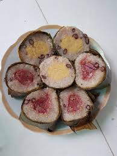
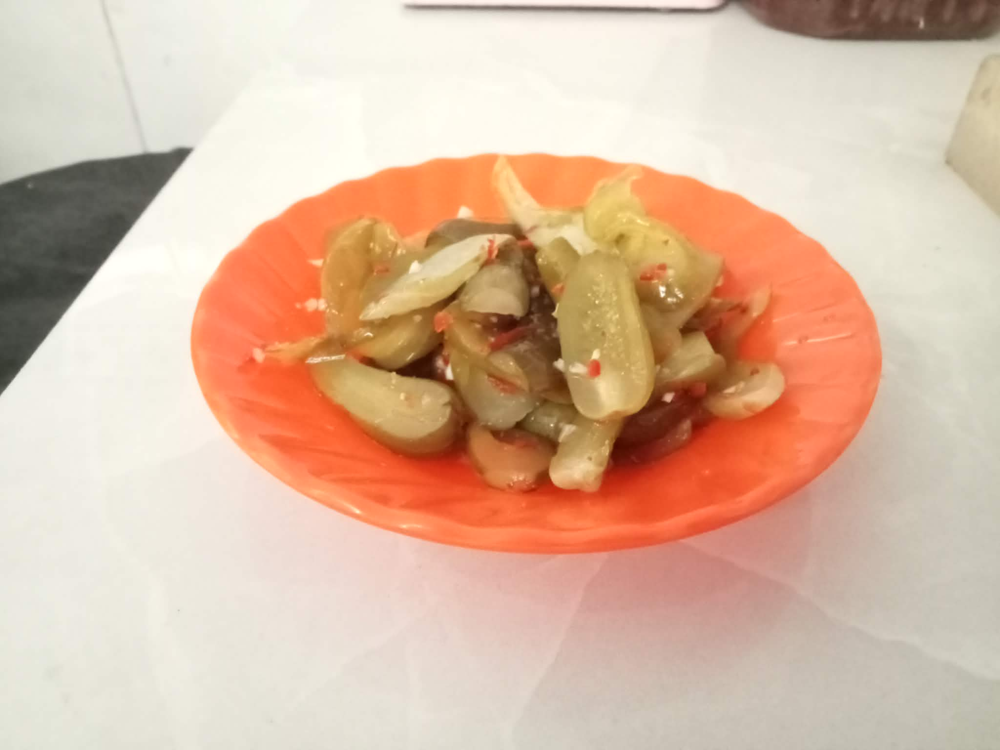

Món ngon khó cưỡng

Bánh Tét Miền Tây
Linh hồn của Tết Kiên Lương. Bánh có nhân đậu xanh thịt mỡ, gói bằng lá chuối vườn nhà thơm phức.
Ý nghĩa: Sự bao bọc của cha mẹ và lòng biết ơn tổ tiên.

Thịt Kho Tàu (Hột Vịt)
Nồi thịt kho nước dừa xiêm trong veo, hột vịt thấm vị. "Thịt kho tàu ở Kiên Lương có thể làm bạn… tăng cân nhưng không thể làm bạn buồn."
Ý nghĩa: Sự đoàn viên, sung túc trọn vẹn.

Củ Kiệu - Dưa Món
Vị chua cay giòn tan giúp chống ngán cho những bữa tiệc Tết thịnh soạn.
Ý nghĩa: Sự khởi đầu mới mẻ, sạch sẽ.